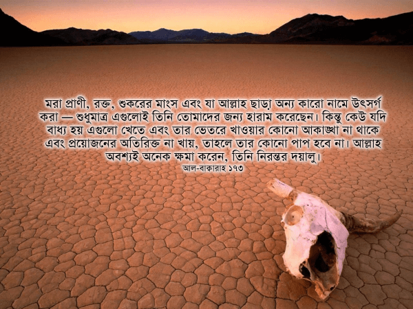
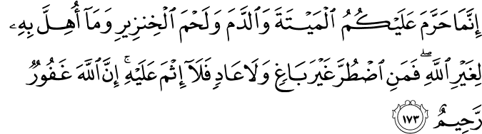

আমরা যারা মুসলিম প্রধান দেশে থাকি, তারা সাধারণত এই ধরনের আয়াত পড়লে চোখ বুলিয়ে পার হয়ে যাই, কারণ মুসলিম প্রধান দেশে কি আর এসব সমস্যা থাকে নাকি? এগুলো হচ্ছে ‘কুফফার’দের দেশে থাকার সমস্যা। দেখা যাক আসলেই তাই কিনা—
{kind=link}
মরা প্রাণী, রক্ত, শুকরের মাংস এবং যা আল্লাহ ছাড়া অন্য কারো নামে উৎসর্গ করা — শুধুমাত্র এগুলোই তিনি তোমাদের জন্য হারাম করেছেন। কিন্তু কেউ যদি বাধ্য হয় এগুলো খেতে এবং তার ভেতরে খাওয়ার কোনো আকাঙ্খা না থাকে এবং প্রয়োজনের অতিরিক্ত না খায়, তাহলে তার কোনো পাপ হবে না। আল্লাহ অবশ্যই অনেক ক্ষমা করেন, তিনি নিরন্তর দয়ালু। [আল-বাক্বারাহ ১৭৩]
{kind=link}
মরা প্রাণী
আল্লাহ تعالى আমাদেরকে প্রথমেই ٱلْمَيْتَةَ আল-মাইতাহ হারাম করেছেন। এর অর্থ হচ্ছে নিজে থেকে মরে যাওয়া, বা কোনো প্রাণীর আক্রমণে মরে পড়ে থাকা প্রাণীর মৃত দেহাবশেষ। লক্ষ্য করুন তিনি تعالى কিন্তু বলেননি যে, মৃত প্রাণীর ‘মাংস খাওয়া’ হারাম, বরং তিনি تعالى বলেছেন ‘মরা জিনিস হারাম’। মৃত জীব খাওয়া, কেনা, বেচা সবকিছুই হারাম। এগুলো থেকে কোনো ধরনের লাভ করাও হারাম। এমনকি নিজেদের পালিত পশুকে মোটা তাজা করার জন্য মৃত কিছু খাওয়ানোও নিষিদ্ধ। তবে ব্যবহারের জিনিস তৈরিতে মৃত প্রাণীর হাড় এবং চুল ব্যবহার করা বৈধ। একইসাথে ট্যানারিতে প্রক্রিয়া করা মৃত প্রাণীর চামড়া ব্যবহার করা বৈধ। তবে মৃত প্রাণীর চর্বি নিষিদ্ধ।[৪] বিভিন্ন তাফসিরে এই নিয়ে বিস্তারিত আলোচনা রয়েছে।
খবরের কাগজে আমরা কয়েক বছর থেকেই দেখতে পাচ্ছি বাংলাদেশে নানা জেলায়, যেমন: ঢাকা, রাজশাহী, কুমিল্লা, ইত্যাদি জায়গায় দেদারসে মরা গরু, মুরগির মাংস বিক্রি হচ্ছে। সরাসরি বিক্রি ছাড়াও শহরের হোটেলগুলোতে নিয়মিত সরবরাহ হচ্ছে মরা গরু, মুরগি। প্রশাসন নিরব। পূর্বাঞ্চলের অ্যানথ্রাক্স সংক্রমিত এলাকাগুলোতে অ্যানথ্রাক্সে মরা গরুর মাংস পর্যন্ত বিক্রি হয়েছে! এছাড়াও কসাইখানাগুলো অত্যন্ত নোংরা অস্বাস্থ্যকর পরিবেশে, নোংরা মাটিতে মাংস রেখে বিক্রি হচ্ছে, যা আর হালালের শর্তগুলো পূরণ করে না। এমনকি রাজধানীর হোটেলগুলোতে বাথরুমে, ড্রেনের পাশে মাংস কাটাকাটি, রান্না হচ্ছে। আরও ভয়ঙ্কর খবর হলো ২০১৫ রমযানে চাইনিজ রেস্টুরেন্টে গরু, ছাগলের মাংসের পাশাপাশি শুকরের মাংস রাখা অবস্থায় ধরা পড়েছে। [সুত্রঃ প্রথম আলো, ইনকিলাব, আমার দেশ, জনকণ্ঠ, কালের কণ্ঠ][৩১৩]
পশ্চিমা দেশগুলোতে অন্তত হালাল লেবেল দেওয়া মাংস হালাল হবে—এই নিশ্চয়তা নিয়ে খাওয়া যায়, কারণ সেখানকার হালাল কমিটি নিয়মিত দোকানে, রেস্টুরেন্টে গিয়ে যাচাই করে, কসাইখানাগুলো এবং দোকানগুলোতে বিক্রি হওয়া মাংসের ডিএনএ পরীক্ষা করে। ধরতে পারলে বিরাট অংকের জরিমানা। যদিও সে সব দেশেও কিছু কেলেঙ্কারি হয়েছে। তবে আইন-শৃঙ্খলা, বিচার-ব্যবস্থা অপেক্ষাকৃত নিরপেক্ষ হওয়ায় এধরনের কেলেঙ্কারি খুব কম হয়। হলেও জলদি ধরা পড়ে যায়। কিন্তু বাংলাদেশের মতো তৃতীয় বিশ্বের দুর্নীতিপূর্ণ ‘মুসলিম’ প্রধান দেশগুলোতে এসব ঘটনা নিয়মিত ঘটে যাচ্ছে, কোনোভাবেই আটকানো যাচ্ছে না।
রক্ত
সূরা আল-আনআ’ম-এর ১৪৫ আয়াতের উপর ভিত্তি করে ‘প্রবাহিত রক্ত’ হারাম ঘোষণা করা হয়েছে। যেই রক্ত মাংসের সাথে লেগে থাকে, সেই রক্ত হারাম নয়। একইসাথে রক্তের কেনা বেচাও হারাম।[৪]
রক্ত হচ্ছে প্রাণীর শরীরের যাবতীয় দূষিত রাসায়নিক পদার্থ, হরমোন এবং রোগ জীবাণুর বাহন। শরীরের বেশিরভাগ পরজীবী এবং ভাইরাস থাকে রক্তে। রক্তের মধ্যে অপাচ্য খাবার মিশে থাকে, যা মাংসের কোষের মধ্যে প্রবেশ করে খাওয়ার যোগ্য মাংস তৈরি হয়নি। একারণে রক্ত খাওয়া বৈজ্ঞানিক ভাবেই অত্যন্ত ঝুঁকিপূর্ণ। কিন্তু তারপরেও পশ্চিমা দেশগুলোতে একটি অত্যন্ত জনপ্রিয় খাবার হচ্ছে রক্তে ভাজা চপ, যার নাম ‘ব্ল্যাক পুডিং’। তাও আবার যার-তার রক্ত নয়, একেবারে শুকরের রক্ত! এই খাবার হোটেলগুলোতে সকালের নাস্তায় পরিবেশন করা হয়। অনেকেই পুডিং ভেবে না বুঝে এই ব্ল্যাক পুডিং খেয়ে ফেলেন। সাবধান!
শুকরের মাংস
আল্লাহ تعالى আমাদেরকে প্রকৃতিতে হাঁস-মুরগি-গরু-ছাগল-ভেড়া, নদীতে হাজারো প্রজাতির মাছ, সমুদ্রে লক্ষ প্রজাতির সামুদ্রিক খাবার ও হাজার রকমের পাখি দিয়েছেন খাওয়ার জন্য। কিন্তু তারপরেও একদল মানুষ শুকরের মাংসের জন্য পাগল। যেই বীভৎস প্রাণীটি ঘিঞ্জি ফার্মে থেকে নিজের মল খায়, নিজের মৃত বাচ্চা এবং অন্যের টিউমার কামড়ে খায়[৩১৪], যার মাধ্যমে সবচেয়ে বেশি ভাইরাস এবং পরজীবীবাহিত রোগ ছড়ায়[৩১৫], যার মাংস আজকে পৃথিবীতে সবচেয়ে দূষিত[৩১৬], যেই প্রাণীর মাংস খেতে তাওরাত, ইঞ্জিল, কু’রআন তিনটি মূল ধর্মীয় বইয়েই[৩১৭] কঠোরভাবে নিষেধ করা আছে, সেই প্রাণী আজকে অনেক দেশে গরু-ছাগল-ভেড়ার থেকে বেশি খাওয়া হয়।
যা আল্লাহ ছাড়া অন্য কারো নামে উৎসর্গ করা
আজকাল অনেক মুসলিম এই ভুল করেন যখন তারা কোনো বিখ্যাত ব্যক্তি, উচ্চ পর্যায়ের সরকারি কর্মকর্তা, রাজনীতিবিদদের সুনজর পাওয়ার জন্য গরু, ছাগল কুরবানি করেন তাদের নামে, তাও আবার ‘বিসমিল্লাহ’ বলে। বিসমিল্লাহ কোনো মন্ত্র নয়। আমাদেরকে বুঝতে হবে আমরা কেন আল্লাহর تعالى নাম নেই।[৪]
আয়াতের এই অংশটুকু আমাদের বিধর্মীদের উপাসনার খাবার, যা তাদের দেব-দেবীদের নামে উৎসর্গ করা, তা গ্রহণ করা আমাদের জন্য নিষেধ করে দেয়। এখন এখানে এসে অনেকেই আপত্তি জানান, “মৃত মাংস, রক্ত, শুকরের মাংস এগুলো খাওয়া নিষেধ কারণ এগুলো স্বাস্থ্যের জন্য ক্ষতিকর। আল্লাহ تعالى তো আর এমনিতেই কোনো কিছু হারাম করেন না। মানুষের ক্ষতি হবে দেখেই তিনি কোনো কিছু হারাম করে দেন। কিন্তু আমার বিধর্মী প্রতিবেশি যদি আমাকে পূজার প্রসাদ দেয়, সেটা খেয়ে তো আমার কোনো ক্ষতি হচ্ছে না। সেটা গ্রহণ না করার পেছনে কোনো বৈজ্ঞানিক যুক্তি নেই। বরং গ্রহণ না করলে তিনি মনে কষ্ট পাবেন। কেন আমরা খামোখা বিধর্মীদের মনে কষ্ট দেব? ইসলামের বদনাম করবো? এটা হারাম হতেই পারে না। আল্লাহ تعالى এত ছোট নন। আপনারা সব কাঠমোল্লা হয়ে যাচ্ছেন।”
আমরা যদি এই দুটো যুক্তি দাঁড় করাই যে, ১) কোনো কিছু যদি বিজ্ঞান সম্মতভাবে মানুষের জন্য ক্ষতিকর হয়, তাহলেই সেটা হারাম হতে পারে, না হলে তা হারাম হতে পারে না। ২) আমাদের কোনো কাজে যদি বিধর্মীরা মনে কষ্ট পায়, তাহলে সেটা হারাম হতে পারে না — তাহলে বেশ কিছু সমস্যা দাঁড়াবে। যেমন—
১) যুক্তি: কোনো কিছু যদি বিজ্ঞান সম্মতভাবে মানুষের জন্য ক্ষতিকর হয়, তাহলেই সেটা হারাম হতে পারে, না হলে তা হারাম হতে পারে না। স্বল্প পরিমাণে, নিয়মিত অ্যালকোহল খাওয়া স্বাস্থ্যের জন্য ভালো। বিজ্ঞান তাই বলে। তাই মাতাল না হয়ে অল্প পরিমাণে নিয়মিত অ্যালকোহল খাওয়া হারাম হতে পারে না। —আমরা অনেকেই মদ খাওয়ার বেলায় এই যুক্তি মেনে নেবো না। তাহলে কেন পূজার প্রসাদ গ্রহণ করার সময় মেনে নেবো? তবে অনেক মুসলিম সত্যিই মনে করেন অল্প পরিমাণে অ্যালকোহল পান করা যেহেতু বৈজ্ঞানিক ভাবেই সমর্থিত, তাই তারা তা হারাম মনে করেন না। তারা বিশ্বাস করেন যে, শুধুমাত্র মাতাল হওয়ার মতো পরিমাণ পান করলেই তা হারাম। তাদের জন্য দুঃসংবাদ। ২০১৫ সালে বিস্তারিত পরীক্ষা করে বিবিসিতে দেখানো হয়েছে যে, অল্প পরিমাণে অ্যালকোহল খাওয়াও লিভারের জন্য ক্ষতিকর। যারা নিয়মিত ‘নিরাপদ’ পরিমাণে অ্যালকোহল পান করে আসছিলেন, তাদের লিভারও দফারফা। দীর্ঘদিন অ্যালকোহল ছেড়ে না থাকলে লিভার আর সুস্থ অবস্থায় ফিরে যেতে পারে না। এই গবেষণার ফলাফল প্রকাশের পর শত বছর ধরে চলে আসা চিকিৎসা বিজ্ঞানের বইগুলো শীঘ্রই পরিবর্তন হতে যাচ্ছে।[৩১৩]
২) যুক্তি: আমাদের কোনো কাজে যদি বিধর্মীরা মনে কষ্ট পায়, তাহলে সেটা হারাম হতে পারে না। যদি আমরা এই যুক্তি মেনে নেই, তাহলে মূর্তিপূজা করাটা হারাম হতে পারে না, কারণ আমরা মূর্তিপূজাকে যে ঘৃণা করি, তাতে বিধর্মীরা মনে অনেক কষ্ট পান। কোনো ধর্মের মানুষরা আমাদের ধর্মের কোনো নিষেধ মেনে চলাতে যদি মনে কষ্ট পান, তাহলে সেটা তাদের সমস্যা, আমাদের সমস্যা নয়। আমাদের কাজ হচ্ছে তাদেরকে সুন্দরভাবে বোঝানো যে, আমরা আমাদের সৃষ্টিকর্তার প্রতি সম্মান রেখে আমাদের ধর্মীয় নিয়ম মানছি। তারা আমাদেরকে অনেক দেশে প্রকাশ্যে আজান দিতে দেন না। আমরা সেটা মেনে নিয়েছি। তাই তাদেরও মেনে নিতে হবে যে, আমরা তাদের ধর্মীয় রীতিনিতিগুলো সব মানিয়ে চলতে পারবো না। কিছু ব্যাপার থাকবে যেখানে আমাদের মধ্যে পার্থক্য থাকবেই। তবে অনেক ব্যাপারেই আমরা কাঁধে কাঁধ মিলিয়ে একসাথে চলতে পারি। যেমন: সমাজ সংস্কার, অভাবীদের দান করা, অন্যায়ের প্রতিবাদ করা, মসজিদ-মন্দির ভাঙ্গা প্রতিরোধ করা ইত্যাদি। কিন্তু কিছু ব্যাপার থাকবেই, যেখানে আমাদের এবং তাদের আলাদা পথ নিতে হবে। আমাদের কারো যদি খুব খারাপ লাগে বিধর্মীদের উৎসর্গ করা খাবার প্রত্যাখ্যান করতে, তার আসল কারণ হচ্ছে: আমরা বিধর্মীদের সাথে বছরের বাকি দিনগুলো একসাথে যথেষ্ট কাজ করছি না। একারণেই বছরে এক-দুইবার যখন বিধর্মীরা আমাদের কাছে অনেক আশা নিয়ে আসেন, তখন তাদেরকে মুখের উপর না বলতে এত খারাপ লাগে। যদি তাদের সাথে আমাদের নিয়মিত সম্পর্ক থাকতো, তাহলে শত সমর্থনের ভিড়ে একটি-দুটি প্রত্যাখ্যান এত দৃষ্টিকটু লাগতো না। তারা ঠিকই আমাদের স্বতন্ত্রতা মেনে নিত।
শুধুমাত্র এগুলোই তিনি তোমাদের জন্য হারাম করেছেন
যদিও আল্লাহ تعالى এই আয়াতে বলেছেন যে, এইগুলো বাদে বাকি যা কিছু তিনি আমাদেরকে খেতে দিয়েছেন, তার সব কিছুই হালাল, তারপরেও বিভিন্ন মতের অনুসারী আলেমরা গবেষণা করে আরও কিছু খাবার নিষিদ্ধ ঘোষণা করেছেন। যেমন, যে সব প্রাণী অন্য প্রাণীদের খায়, যেমন বাঘ, সিংহ, কুকুর ইত্যাদি, এগুলোর মাংস খাওয়া হারাম নির্ধারিত হয়েছে কিছু শক্ত দলিলের সাপেক্ষে। তাই কোনটা খাওয়া যাবে, আর কোনটা খাওয়া যাবে না, তা ভালো করে জানতে আলেমদের এই সিদ্ধান্তগুলো জানা দরকার। প্রসিদ্ধ তাফসিরগুলোতে এনিয়ে বিস্তারিত আলোচনা রয়েছে। যদি আমরা সঠিক পদ্ধতিতে সিদ্ধান্ত না নেই, শুধুই এই আয়াতের আপাত অর্থ থেকে উপসংহারে পৌঁছে যাই, তাহলে দেখা যাবে মানুষের মাংস কেউ হালাল ঘোষণা করে দিচ্ছে। কারণ এই আয়াতে তো আল্লাহ تعالى মানুষের মাংস হারাম বলেননি?
এখানে একটি উল্লেখযোগ্য ব্যাপার হলো, আল্লাহ تعالى আমাদেরকে إِنَّمَا ‘শুধুমাত্র’ ব্যবহার করে সাবধান করে দিচ্ছেন: আমরা যেন ইহুদী পণ্ডিতদের মতো আল্লাহর تعالى পক্ষ থেকে হালাল করা খাবার নিজেদের জন্য হারাম করে না ফেলি। হালাল কিছুকে হারাম করা একটি ভয়ঙ্কর অপরাধ। তাই কেউ যেন যখন তখন নিজের বিচার-বুদ্ধি ব্যবহার করে কোনো হালাল কিছু হারাম ঘোষণা করে না বসে। এর জন্য দরকার বিস্তারিত ফিকহি জ্ঞান, একাধিক আলেমের মত, প্রাতিষ্ঠানিক স্বীকৃতি।
কিন্তু কেউ যদি বাধ্য হয় এগুলো খেতে
আল্লাহ تعالى আমাদেরকে কখনো সাধ্যের অতিরিক্ত কিছু করতে বলেন না। কেউ মরুভূমিতে হারিয়ে গেছে। তার কাছে কোনো খাবার নেই, কোনো পানীয় নেই। কিছু না খেলে আর বেঁচে থাকা সম্ভব নয়। এমন অবস্থায় কেউ যদি একটা মৃত প্রাণী পড়ে থাকতে দেখে, এবং সেটা থেকে একটুখানি খেয়ে ফেলে জীবন বাঁচানোর তাগিদে, তাহলে আল্লাহ تعالى ক্ষমা করে দেবেন। তিনি অত্যন্ত ক্ষমাশীল, নিরন্তর দয়ালু। একজন মানুষের জীবনের দাম অনেক বেশি।[১২]
আজকাল টর্চার ক্যাম্পগুলোতে মুসলিম বন্দীদের উপর অমানুষিক নির্যাতন চালানো হয়। তাদেরকে জোর করে শুকরের মাংস সহ আরও বীভৎস সব জিনিস খাওয়ানো হয়। এরকম কঠিন পরিস্থিতিতে কোনো বন্দি যদি অত্যাচার থেকে বাঁচার জন্য একটু শুকরের মাংস মুখে দেন, তাহলে তার অনুমতি আল্লাহ تعالى দিয়েছেন।[১২]
কিন্তু এর মানে এই না যে, কেউ এমন একটা দেশে আছে, যেখানে শত মাইলের মধ্যে কোনো হালাল মাংসের দোকান নেই, আর সে হালালের তোয়াক্কা না করে যে কোনো মাংস খাওয়া শুরু করলো —সেটা কখনই এই আয়াতে বলা ‘কঠিন পরিস্থিতি’র মধ্যে পড়ে না। শত প্রজাতির মাছ, সামুদ্রিক প্রাণী আছে। ভেজিটেরিয়ান হয়ে কোটি কোটি মানুষ সুস্থ-সবল জীবন পার করছে। তাই নিশ্চিতভাবে হালাল-নয় এমন মাংস খাওয়ার কোনো অজুহাত থাকতেই পারে না। এটা শুধুই অসৎ মানসিকতার পরিচয় দেয়। যারা এখনো আল্লাহকে تعالى যথাযথ সম্মান করতে পারেনি, তারাই এই ধরনের অনিশ্চয়তার পরিস্থিতিতে পড়লে নিজেদের লোভকে প্রাধান্য দেয়।
সূত্র:
- [১] নওমান আলি খানের সূরা আল-বাকারাহ এর উপর লেকচার এবং বাইয়িনাহ এর কু’রআনের তাফসীর।
- [২] ম্যাসেজ অফ দা কু’রআন — মুহাম্মাদ আসাদ।
- [৩] তাফহিমুল কু’রআন — মাওলানা মাওদুদি।
- [৪] মা’রিফুল কু’রআন — মুফতি শাফি উসমানী।
- [৫] মুহাম্মাদ মোহার আলি — A Word for Word Meaning of The Quran
- [৬] সৈয়দ কুতব — In the Shade of the Quran
- [৭] তাদাব্বুরে কু’রআন – আমিন আহসান ইসলাহি।
- [৮] তাফসিরে তাওযীহুল কু’রআন — মুফতি তাক্বি উসমানী।
- [৯] বায়ান আল কু’রআন — ড: ইসরার আহমেদ।
- [১০] তাফসীর উল কু’রআন — মাওলানা আব্দুল মাজিদ দারিয়াবাদি
- [১১] কু’রআন তাফসীর — আব্দুর রাহিম আস-সারানবি
- [১২] আত-তাবারি-এর তাফসীরের অনুবাদ।
- [১৩] তাফসির ইবন আব্বাস।
- [১৪] তাফসির আল কুরতুবি।
- [১৫] তাফসির আল জালালাইন।
- [১৬] লুঘাতুল কুরআন — গুলাম আহমেদ পারভেজ।
- [৩১৩] মরা গরুর, মুরগির মাংস— ১) প্রথম আলো,. (2015). মরা গরুর মাংস বিক্রির দায়ে জরিমানা. Retrieved 19 July 2015, from http://www.prothom-alo.com/bangladesh/article/451900/%E0%A6%AE%E0%A6%B0%E0%A6%BE-%E0%A6%97%E0%A6%B0%E0%A7%81%E0%A6%B0-%E0%A6%AE%E0%A6%BE%E0%A6%82%E0%A6%B8-%E0%A6%AC%E0%A6%BF%E0%A6%95%E0%A7%8D%E0%A6%B0%E0%A6%BF%E0%A6%B0-%E0%A6%A6%E0%A6%BE%E0%A6%AF%E0%A6%BC%E0%A7%87-%E0%A6%9C%E0%A6%B0%E0%A6%BF%E0%A6%AE%E0%A6%BE%E0%A6%A8%E0%A6%BE
২) Amardeshonline.com,. (2015). তিতাসে মরা গরুর মাংস বিক্রির সময় ৩ কসাই আটক . Retrieved 19 July 2015, from http://amardeshonline.com/pages/details/2015/04/19/280834#.Vav2Z_lVhBc
৩) প্রথম আলো,. (2015). মরা মুরগির মাংস বিক্রির চেষ্টা. Retrieved 19 July 2015, from http://www.prothom-alo.com/bangladesh/article/314206/%E0%A6%AE%E0%A6%B0%E0%A6%BE-%E0%A6%AE%E0%A7%81%E0%A6%B0%E0%A6%97%E0%A6%BF%E0%A6%B0-%E0%A6%AE%E0%A6%BE%E0%A6%82%E0%A6%B8-%E0%A6%AC%E0%A6%BF%E0%A6%95%E0%A7%8D%E0%A6%B0%E0%A6%BF%E0%A6%B0-%E0%A6%9A%E0%A7%87%E0%A6%B7%E0%A7%8D%E0%A6%9F%E0%A6%BE
৪) বাংলাদেশ প্রতিদিন,. (2015). হোটেলে বিক্রি হয় মরা মুরগির মাংস | Bangladesh Pratidin. Retrieved 19 July 2015, from http://www.bd-pratidin.com/2013/12/19/32834
৫) Kalerkantho.com,. (2015). পাবনায় অ্যানথ্রাক্সে মরা গরুর মাংস বিক্রি, গ্রেপ্তার ৩ :: খবর :: কালের কণ্ঠ. Retrieved 19 July 2015, from http://www.kalerkantho.com/print_edition/index.php?view=details&type=gold&data=news&pub_no=274&cat_id=1&menu_id=43&news_type_id=1&index=4&archiev=yes&arch_date=03-09-2010#.Vav6QvlVhBc
৬) দৈনিক ইনকিলাব,. (2015). কোটালীপাড়ায় মরা গরু জবাই করার অপরাধে দুইজন আটক. Retrieved 19 July 2015, from http://www.dailyinqilab.com/details/9636/information/ad
৭) The Daily Janakantha. চোরাই গরু এবং মরা মুরগির কাহিনী। Retrieved 19 July 2015, from http://oldsite.dailyjanakantha.com/news_view.php?nc=13&dd=2012-04-23&ni=94071
৮) YouTube,. (2015). ইফাতারির মাংসের সাথে শুকরের মাংস রেখে সেই মাংস খাওয়াচ্ছে .. Retrieved 19 July 2015, from https://www.youtube.com/watch?v=J1jO2gVsydk - [৩১৪] ফার্মের অস্বাস্থ্যকর পরিবেশে বীভৎসভাবে হত্যা করা গবাদিপশু — http://www.youtube.com/watch?v=32IDVdgmzKA
- [৩১৫] শুকর থেকে ছড়ানো অসুখ — http://www.oie.int/doc/ged/D9117.PDF, http://www.ncbi.nlm.nih.gov/pubmed/9329109
- [৩১৬] শুকরের মাংস টক্সিক — http://www.draxe.com/why-you-should-avoid-pork/, http://articles.mercola.com/sites/articles/archive/2012/12/12/eating-pork.aspx
- [৩১৭] শুকরের মাংসের উপর নিষেধাজ্ঞা — Deuteronomy 14:8, Leviticus 11:7, আল-বাক্বারাহ ১৭৩
- [৩১৮] অল্প অ্যালকোহলও লিভারের জন্য ক্ষতিকর — BBC News,. (2015). Drinking for science – Is binge drinking really that bad – BBC News. Retrieved 19 July 2015, from http://www.bbc.co.uk/news/health-32798569